隣国であるインドや中国に比べると、観光地としてのイメージは薄いかもしれませんが、実はとても魅力のある国なんです。
エベレストをはじめとする標高8,000m級の山々に、野生動物が生息する国立公園、中世の趣が漂う世界遺産や宗教の聖地まで、その見どころは多岐に渡ります。
本記事では、ネパールにあるおすすめの観光スポットを厳選してご紹介します。
首都カトマンズをはじめ、様々なエリアを載せているので、ネパール旅行・観光を計画する際はぜひ参考にしてください。
【目次】ネパールのおすすめ観光スポット7選！カトマンズやポカラなど定番から穴場の観光地まで
ネパールってどんな国？

インド北部に位置する内陸国、ネパール。
日本でネパール料理のレストランを訪れたことがある方は、なんとなく親しみを感じやすいかもしれません。
観光地としてはあまりメジャーではありませんが、見どころが多く、物価も安いのが魅力です。
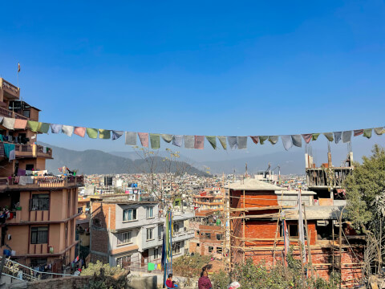
国土は北海道の2倍に満たない面積ですが、なんと8割あまりは丘陵・山岳地帯に覆われているのだそう。
中国のチベット自治区と接するヒマラヤには、世界最高峰であるエベレスト（標高 8,849m）をはじめとする高峰が連なります。
多様な民族が暮らす多民族国家という一面もあり、言語や宗教、文化も様々です。
ネパールといえば、どこかインドに近いようなイメージをお持ちの方が多いはず。
もちろんカレーも食べますし、独特のインド感が漂う要素もありますが、やはり想像した「ネパール」とは少し異なる。
そんな意外な発見を手探りで辿っていくのも、ネパール旅ならではの面白さでしょう。
ネパールの観光情報
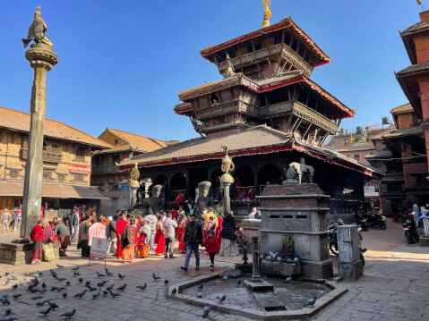
観光の玄関口は、首都・カトマンズ（Kathumandu）。
2015年のネパール地震が記憶に新しいですが、近年では着実に復興を遂げ、外国人旅行者の数も元に戻りつつあります。
2023年1月には、西部の人気観光地であるポカラ（Pokhara）にも新たな国際空港が誕生しました。
今後はアクセスの利便性がさらに向上し、さらなる注目を集めることが期待されています。
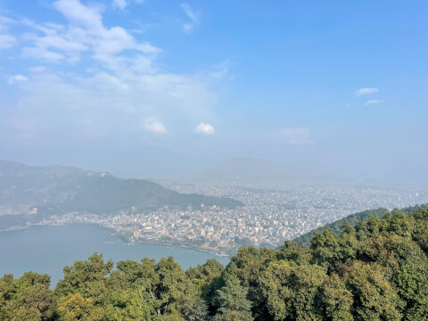
筆者がネパールを訪れたのは、2022年12月。
ここでは、ネパールの観光情報を滞在中の実体験を交えて紹介していきます。
国名：ネパール連邦民主共和国
面積：14.7平方キロメートル
人口：2,919万人（2021年）
民族：パルバテ・ヒンドゥー・マガル・ネワールなど
言語：ネパール語
宗教：ヒンドゥー教・仏教・イスラム教など
日本との時差：-3時間15分
通貨：ネパール・ルピー（1ルピーあたり1円／2023年1月時点）
ベストシーズンは10〜5月
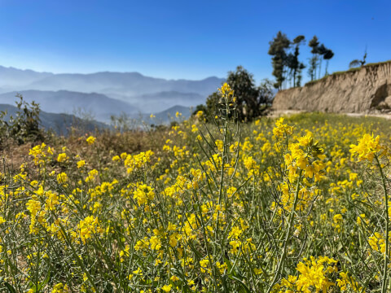
ネパールの気候は、大きく雨季（6～9月）と乾季（10～5月）に分けられます。
一般的にベストシーズンとされるのは、天気が安定していて過ごしやすい10〜5月。
ヒマラヤ登山をメインに楽しむなら、10〜11月および3月中旬〜5月がおすすめです。
ネパールの冬は日本と比べれば暖かいですが、朝晩は一桁台まで冷え込むことも珍しくありません。
12月から3月上旬にかけて旅行する方は、コートやダウンジャケットなど本格的な冬の装いが必要となります。
ネパール観光に必要な日数と費用の目安
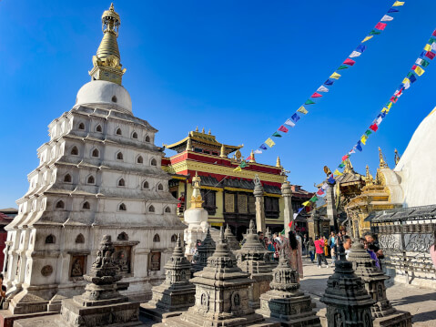
ネパールの主な見どころは、首都カトマンズやポカラ、チトワン国立公園、ルンビニなどが挙げられます。
これらを全て訪れるとなると、駆け足で巡っても最低でも1週間は必要となるでしょう。
ネパールの交通インフラは未だに発展途上にあるため、車やバスでの移動には非常に時間がかかります。
主要都市には国内線も就航しているので、急ぎの場合は飛行機で移動するのも選択肢の一つです。
観光にかかる費用は訪れる場所にもよりますが、1日あたり3,000〜5,000円を見積もっておくのが理想。
ホテルやツアー代は含みませんが、飲食や各種入場料の他、観光で必要となるちょっとした移動代はカバーできるでしょう。
ネパールのおすすめ観光スポット
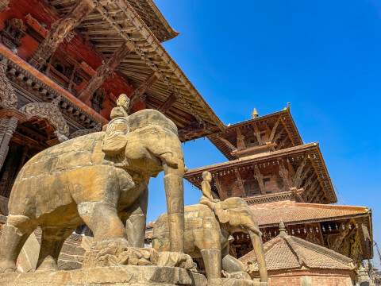
ここでは、ネパール各地の見どころをご紹介します。
すべての観光スポットは入場料が必要ですが、その対象は外国人観光客のみです。
日本人はチベット系ネパール人と容姿が似ているため、入場料を徴収されないケースも多々あります。
記載している料金はあくまで公式の入場料なので、臨機応変に対応していただければと思います。
1. スワヤンブナート寺院
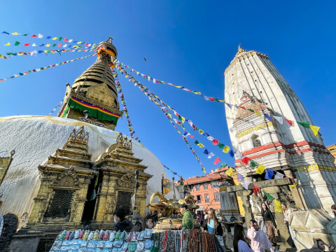
スワヤンブナート寺院は、ネパール最古の仏教寺院です。
ユネスコの世界遺産「カトマンズの渓谷」を構成する建物の一つで、その歴史は2,000年あまりに及びます。
特徴的な仏塔は高さ15m、四面に描かれた「ブッダ・アイ」はまさにネパールを象徴する存在です。
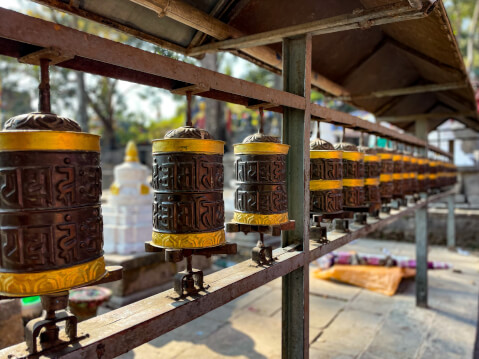
周囲は「マニ」と呼ばれる円筒が360度取り囲んでおり、参拝者がクルクルと回しながら歩く姿が見られます。
これはチベット仏教における仏具の一つで、中には真言を印刷した巻物が入っているのだそう。
回転させるとお経を唱えるのと同じ功徳があるといわれているので、ぜひ試してみてください。
2. ダルバール広場
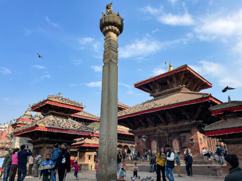
カトマンズで最も有名な観光スポットといえば、ダルバール広場。
ダルバール（Durbar）とはネパール語で「王宮」を意味する言葉で、周辺には同じ名前の広場が3つ存在します。
一つはカトマンズ中心部、その他はパタンとバクタプルに位置しています。
これらは12世紀頃に誕生した王国で、それぞれが高度な文化や芸術を築いたとされています。
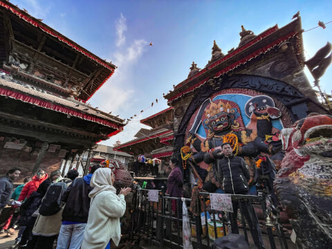
カトマンズは、かつて「カンティノープル（栄光の都）」と呼ばれていました。
近年の急速な発展により古い街並みは失われつつありますが、ここダルバール広場には繁栄当時の面影を感じさせる美しい建物が多く残されています。
主な見どころは旧王宮や様々な寺院、パワースポットとして親しまれるカーラ・バイラヴ像など。
現存するものではネパール最古といわれるカスタマンダップ寺院もあるので、ぜひお見逃しなく。
3. パタン
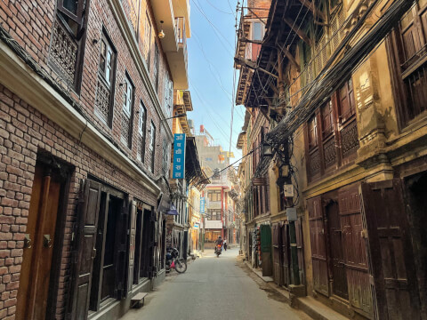
パタン（Patan）は、カトマンズ南西部に位置する古都。
その歴史は3世紀までさかのぼり、カトマンズ盆地で最も古い都市とされています。
この街は「ラリトプール（美の都）」という別名で親しまれる通り、芸術的な都市としてお馴染み。
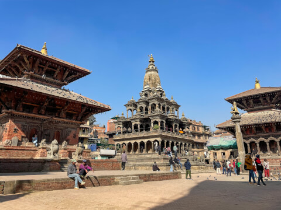
ダルバール広場はもちろん、パタンには黄金寺院や五重塔、および仏塔など1,200以上もの遺構が存在します。
細部まで美しい装飾が施されたネワール建築は必見です。
街の雰囲気を味わいながら、ぜひ散策をお楽しみください。
4. バクタプル
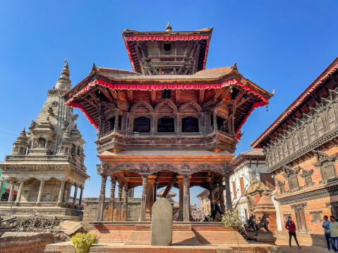
バクタプル（Bhaktapur）も12〜18世紀に栄えた王国の一つです。
別名は「バドガオン（信仰の街）」。
ここはカトマンズ盆地で最も美しい都市として親しまれています。
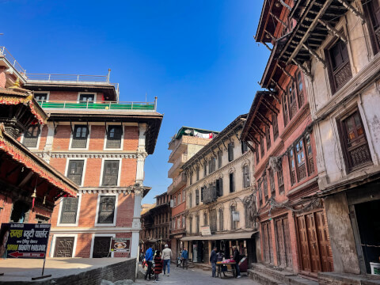
街には赤レンガ造りの建物が立ち並び、中世の面影が色濃く残されています。
多くの歴史的建造物が点在するほか、街並みの保存状態が良いのもバクタプルならでは。
筆者はカトマンズ周辺で訪れた中で、バクタプルが一番のお気に入りです。
ダルバール広場を中心に気の赴くまま "中世の世界観" に浸るのが、バクタプルの楽しみ方。
バクタプルは建築や彫刻、工芸、絵画など、すべてにおいて素晴らしい街です。
中心部にはホテルやゲストハウスもあるので、滞在日数に余裕のある方は泊まってみるのも良いでしょう。
6. フェワ湖
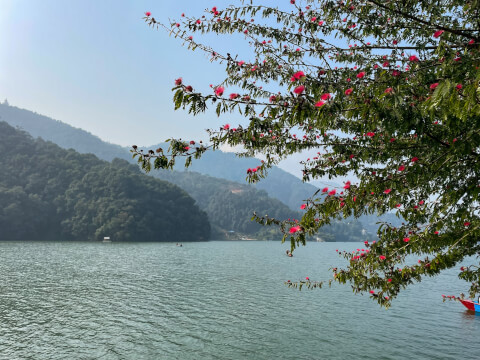
首都カトマンズに次ぐ、第二の都市「ポカラ（Pokhara）」。
周辺にそびえる8,000m級の山々と湖のコントラストが素敵なリゾート地です。
アンナプルナ・ベースキャンプをはじめとする、ヒマラヤ・トレッキングの拠点となるのがこの街。
ポカラといえば本格的な山好きが訪れる観光地というイメージが強いですが、実は街中にもたくさんの見どころがあります。
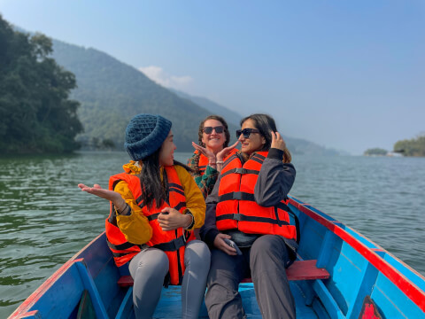
中でも、ポカラ観光に欠かせないのがアンナプルナ氷河を水源とする「フェワ湖」です。
湖畔にはおしゃれなカフェやレストランが立ち並んでいるので、朝食やランチがてら足を運んでみませんか？
アクティブ派の方ならボートやカヤックで湖を探検したり、反対岸に渡ってハイキングを楽しむのもおすすめです。
6. ルンビニ
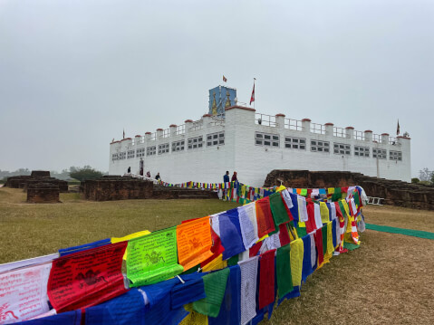
ルンビニ（Lumbini）は、「ブッダの生誕地」として親しまれる世界遺産の村です。
インド国境から近いので、スノウリを経由してポカラに向かう人はぜひ立ち寄ってみてください。
ここはインドのブッダガヤ・サルナート・クシーナガラと共に仏教の「四大聖地」とされる神聖な場所です。
村の中心部にあるマヤデビ寺院には、お釈迦様が生まれたことを示す印石が安置されています。
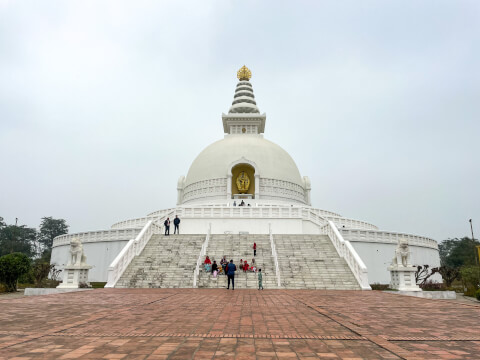
その他周辺には、アショーカ王の巡礼時に建立された石柱や釈迦が産湯をつかったという池などがあります。
周辺には日本を含む多くの国の仏教寺院が点在しています。
一部の寺院ではお布施を納めることにより宿坊を利用することができるので、気になる方はぜひこの機会に体験してみてください。